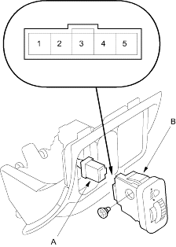
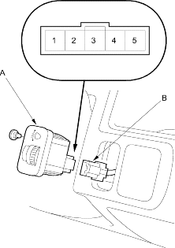

- Remove the driver's pocket (see page 20-76).
- Disconnect the 5 P connector (A) from the headlight adjuster switch (B), then remove the switch.

- Measure resistance between the No. 1 and No. 3 terminals and No. 2 and No. 3 terminals at positions 0, 1, 2, and 3 by moving the switch knob.
Between the No. 1 and No. 3 terminals:
About 4.7 k ohms
Between the No. 2 and No. 3 terminals:
| Knob position | 0 | 1 | 2 | 3 |
| Resistance
[About (k ohms)] |
0.7 | 1.7 | 2.0 | 2.6 |
- Remove the driver's pocket (see page 20-216).
- Carefully push out the headlight adjuster switch (A) from behind the dashboard.

- Disconnect the 5P connector (B) from the switch.
- Measure resistance between the No. 1 and No. 3 terminals and No. 1 and No. 2 terminals at positions 0, 1, 2, and 3 by moving the switch knob.
Between the No. 1 and No. 3 terminals:
About 4.7 k ohms
Between the No. 1 and No. 2 terminals:
| Knob position | 0 | 1 | 2 | 3 |
| Resistance
[About (k ohms)] |
0.7 | 1.4 | 1.9 | 2.4 |